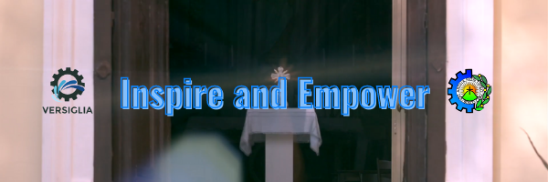

About Me
Hello, I am Jero Benedict P. Berdida. The years have caught up to me and I am now 15 years of age. Currently, I am pursuing education in DBTC - Cebu as a junior highschool student. Throughout the pandemic, I have come to appreciate the bygone days. The days where we could run, jump, and shout in the school. I have learned a lot through the sacrifice of freedom in return for health and safety. Inspite of this, I still look forward to the start of limited face to face classes in the next school year. I have been spending atleast 2 school years now at long distance learning. I feel like I missed out on a lot oppurtunities. Oppurtunities that the school offer and memories from school interactions. In my opinion, that is the true selling point of schools.
Motto

Goal

Hobbies
I had not much of an ambition growing up. I would always space out in the present. I would also be more of a passive person. But now, I have come to realize that the present is a precious time. I have to make use of it before it becomes the past. Technology has advanced so much throughout the years. To take advantage of this, I grew to learn more about graphic design.
Logos
Posters
Contact
Social Media grants a user a myriad of accessability of communication. You can find me on these two platforms. Through my faebook page, I aim to build a community welcome to all. You can also contact me through my personal facebook account.
@jeroberdida24